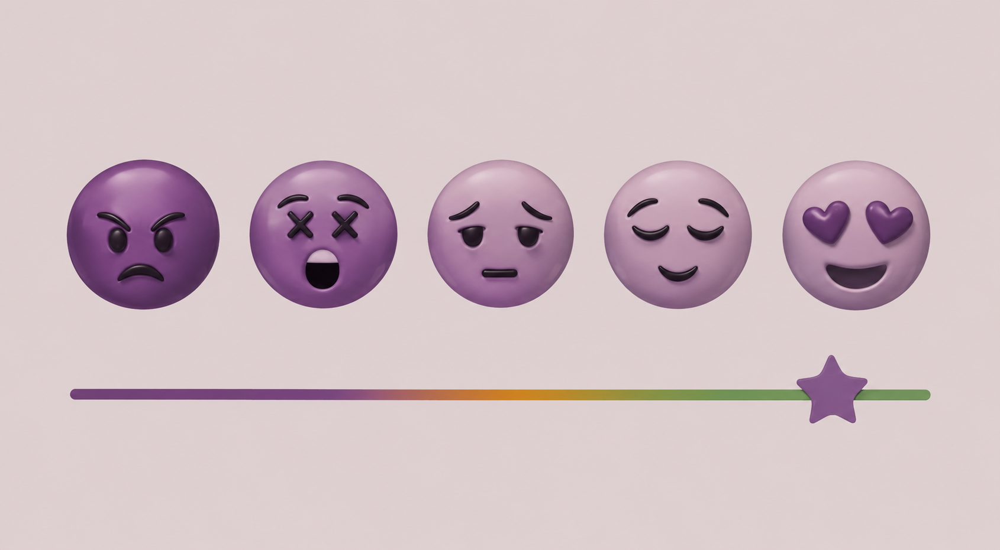

Welcome to the North-West University Mental Wellness Hub , a safe and supportive space dedicated to promoting emotional wellbeing, academic balance and personal growth among students.
At NWU, student success is not only about academics but also about mental, emotional and social wellbeing. This platform connects students with resources, support services and wellness information to help students thrive throughout their university journey.
Our Mission
To support NWU students in maintaining positive mental health by providing accessible information, counselling resources, awareness about emotional wellbeing and stress management.
Why Mental Wellness Matters at NWU
At North-West University, student success goes beyond academics. Mental wellness plays a key role in your ability to focus, perform and enjoy your university experience. Many students face challenges such as exam stress, adjusting to campus life and managing personal responsibilities.
This platform encourages you to take small, positive steps every day to care for your mental health. Whether you are feeling overwhelmed or simply want to maintain balance, support is always available.
Quick Wellness Tips
- Get enough sleep before classes and exams
- Stay organised with a study timetable
- Take regular breaks during study sessions
- Stay connected with friends and support networks
Check in with Yourself
Select your current mood below:
